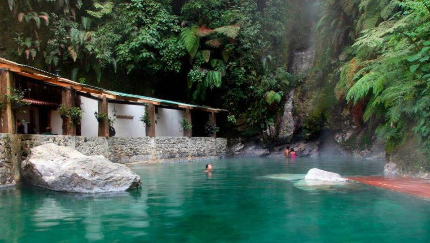

Lugares turísticos en Quetzaltenango que puedes visitar Museo Ferrocarril de los Altos Laguna y volcán de Chicabal Pasaje Enríquez Templo de Minerva Cerro El Baúl Museo de Historia Natural de Quetzaltenango Casa No’j Estos son algunos de los lugares que puedes conocer. Si quieres aprovechar unas vacaciones en familia o pasártela bien con tus amigos, te invitamos a que sigas leyendo y descubras qué hacer en Quetzaltenango.
